SkillCat · Online Learning
An all-in-one HVAC learning platform.
One platform, two surfaces; the consumer mobile app learners use to earn a credential, and the B2B web dashboard employers use to train their teams.
SkillCat is a skilled-trades training platform — people learn HVAC, electrical, or plumbing to earn the certifications that get them hired, and employers use it to train their teams.
I worked across both surfaces as a product designer — the mobile + desktop learner redesign and a new admin dashboard for employers — and wrote the specs that translated those decisions into something engineering could build.
01 · The Starting Point
The original app — a deep catalog, but no clear path.
The library and the certifications were all there — but the experience was catalog-first. Learners landed in a wall of categories and had to assemble their own route to the credential that actually gets them hired.
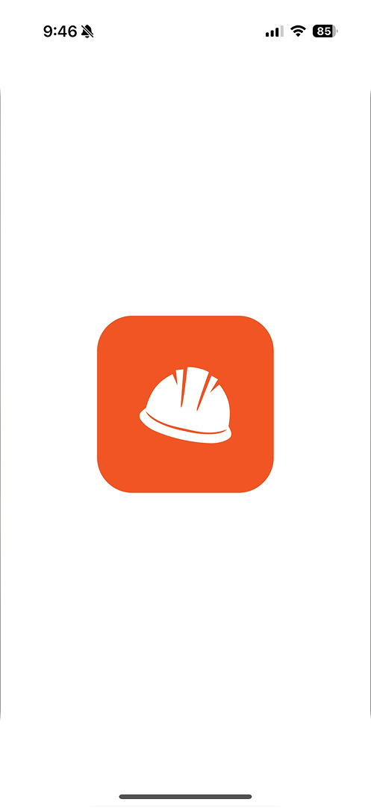

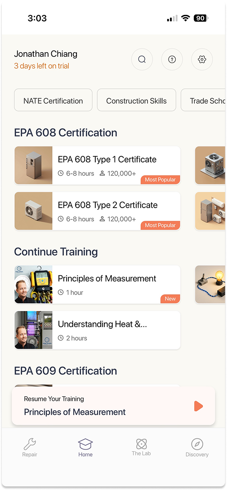


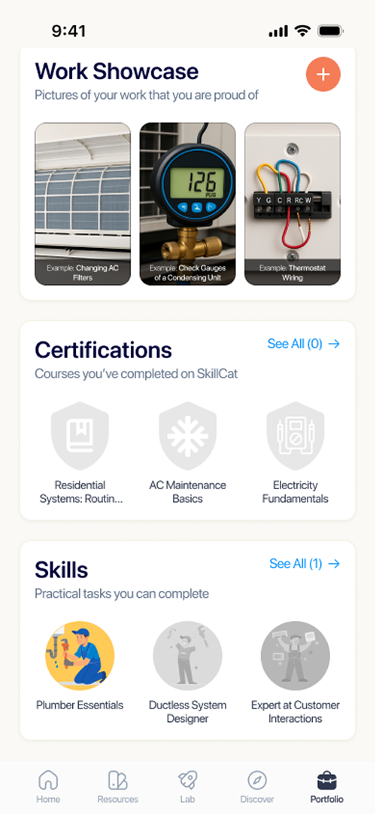
What wasn't working
- 01
Catalog-first — learners landed in categories (EPA 608, Trade School Diplomas…) with no guided path.
- 02
The credential that gets you hired was hard to find among everything else on offer.
- 03
Little sense of progress or "what's next" — easy to enroll, easy to drift.
- 04
A five-tab nav (Social, Skill Check, Class, Simulations, Profile) split attention away from the goal.
02 · Research & The Landscape
Trade learners are outcome-driven.
Trade learners study HVAC, electrical, or plumbing to earn a certification and a better paycheck — often mid-career, often learning on the job. Step one: get the vocabulary right (OJT, EPA 608, HVAC) so the product sounds like the trade, not edtech.
01
Outcome-driven
They're here for a credential and a raise, not points and streaks for their own sake.
02
Field language
OJT, EPA 608, HVAC — the product should sound like the worksite, not a classroom.
03
Mixed confidence
First-timers and seasoned techs both use it — the path has to work for both ends.
Direct — trade schools & cert providers (Interplay Learning, Penn Foster, HVACR School): credible but corporate and dated.
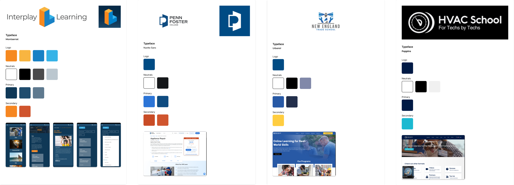
Indirect — consumer learning apps (Coursera, Skillshare, Duolingo): polished and habit-forming, but mostly light and soft.
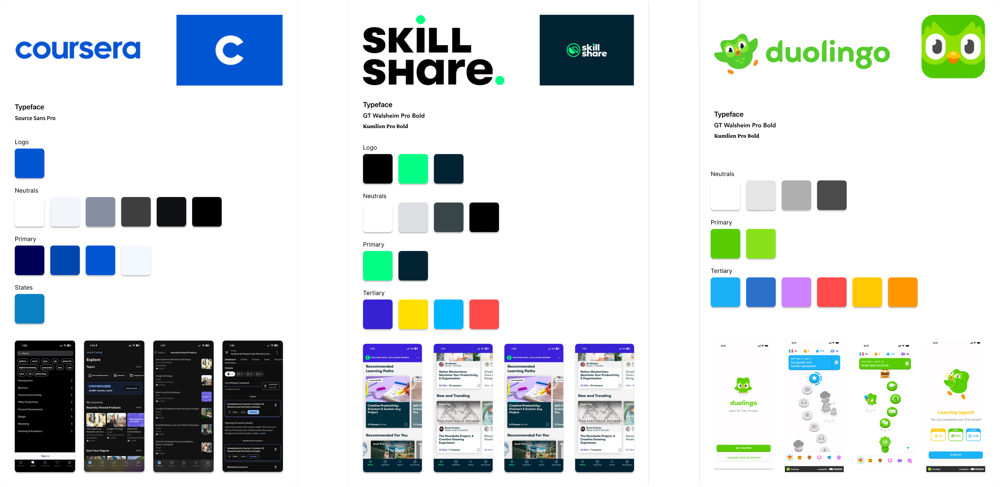
What the scan told me
- Duolingo is playful and habit-forming, but too cartoony to feel credible for older trades users.
- Airbnb uses modern 3D illustration sparingly — warmth without noise, a model worth borrowing.
- Trade-school brands skew corporate and dated — a clear opening for something modern and trustworthy.
- Most edtech is light and gentle; the trades read as practical and high-contrast — a chance to look different and earned.
03 · Finding The Brand
Three brand directions explored
Three directions: bright and playful, light and corporate, dark and industrial. The bright one felt too casual; the corporate one blended in. The dark navy + safety-orange system felt practical and ownable — closer to the gear and worksites the audience already trusts.
The chosen system
SkillCat, An all-in-one HVAC learning platform.
For $10/month- Access Self-Paced Trade School Programs & Certifications designed to get you job-ready in just a few weeks
04 · Iterating The Experience
4 main interations — what changed at every step.
Onboarding shifted from a form-first signup to a few guided questions that build a personalized path. Home shifted from a flat catalog to a clear "path to a paycheck." Each round cut friction and made the next action harder to miss.
Before · V1
Form-first signup
- Contact info, legal name, and an SMS code before any value
- A flat catalog of categories to pick from blindly
- No personalization, no sense of a destination
After · Shipped
A guided path
- A few questions — goal, experience, trade — assemble your path
- "Your path to an HVAC career" with the earnings on the line
- A clear first step and recommended courses up front
Home
The first thing learners see when they open the app — where the path forward should be the most obvious thing on the screen.
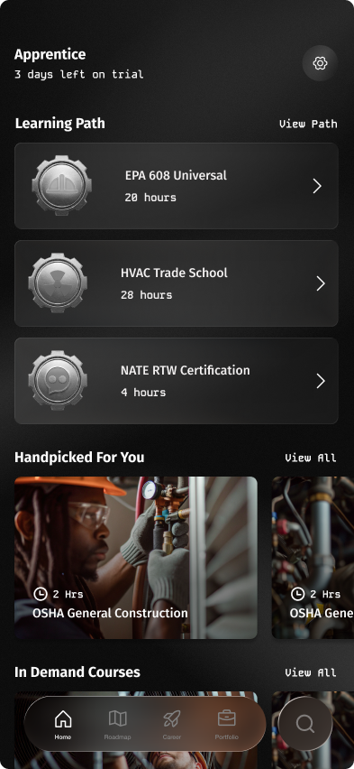
- Learning plan cards are too tall.
- What if a user has 5+ learning plans? Stacking on the home page overflows.
- Navigation bar is modern but runs into legibility issues.
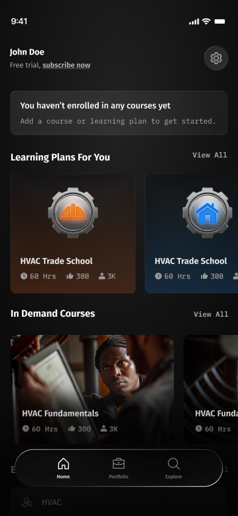
- Learning plans now look visually different from regular courses.
- Simplified the learning path — one single path stacked on the backend.
- Simplified the navigation bar.
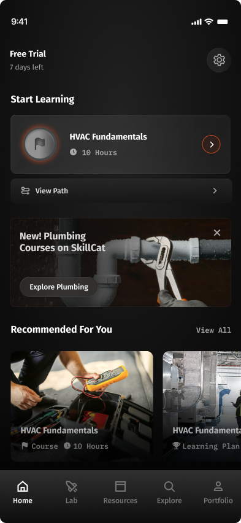
- Simplified the header billing status.
- Simplified the iconography.
- Added a full-width banner for new courses.
- Reverted to a traditional navigation bar.
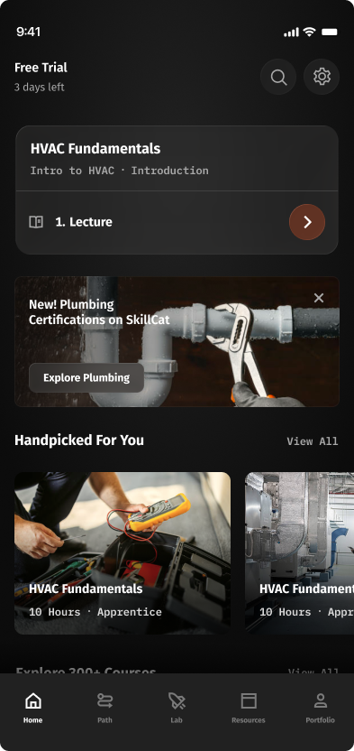
- Moved Search up into the header.
- Collapsed Start Learning into one card with the course + current task title.
- Added "Path" to the nav — direct entry to the Course Tree.
Course overview
The "about this course" page — what you'll learn and what's inside, before you commit to starting. It has to set the stakes without burying the lesson.
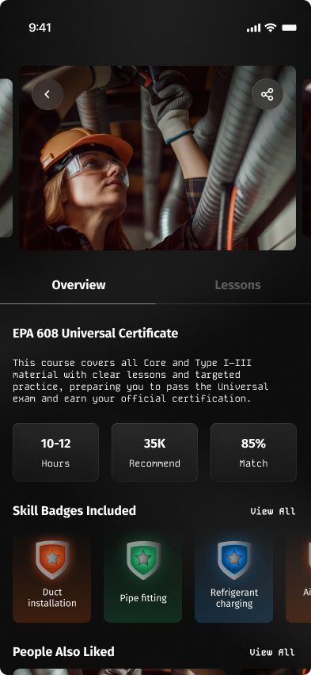
- Added Overview and Lesson tabs.
- Can cycle between courses like the original screen.
- Included hours, recommended, and match stats from the original.
- Skill badges in various colors.
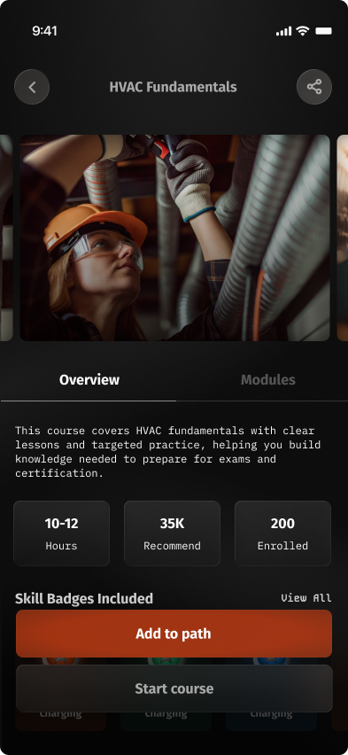
- Moved course title + buttons to the top of the page.
- Kept the course cycling feature.
- Replaced Match % with # enrolled.
- Pulled CTAs into the bottom of the viewport so they're always visible.
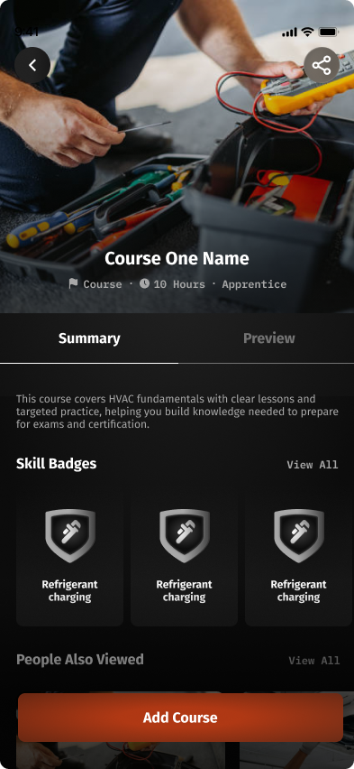
- Course image now takes the full width of the page.
- Title and stats moved inside the course image.
- Removed the course cycling feature.
- Simplified the badge colors.
- Combined Add to Path + Start Course into a single Add Course button.
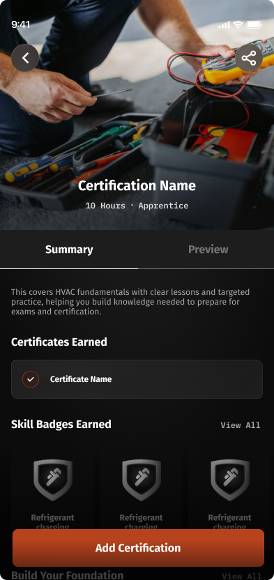
- Changed copy from "Course" to "Certification."
- Removed the course name from the stats block.
- Surfaced the awarded certification(s) upon completion.
Portfolio
The trophy case — earned credentials, in-progress courses, and the proof a learner can show an employer. The payoff for everything before it.
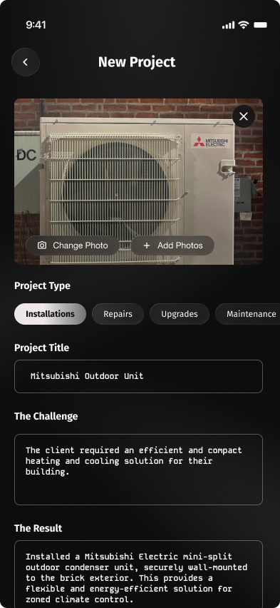
- Large photo card up top.
- Options for selecting a project type.
- Project title, challenge, and result are all typed in manually.
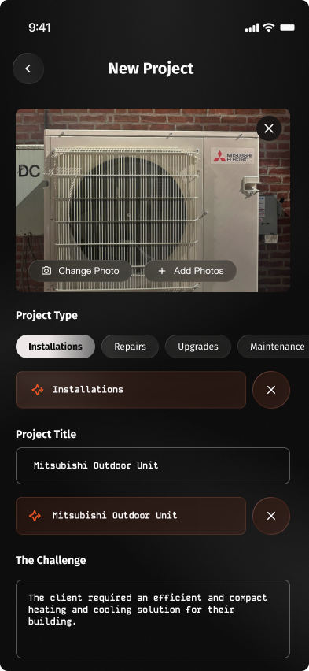
- Added AI suggestions to speed up entry.
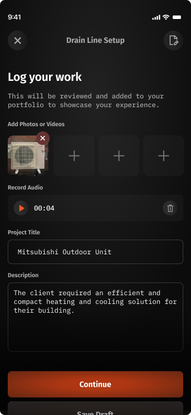
- Project type is now selected before starting — the flow is gated upfront.
- Photos take a less prominent role.
- Added audio recording.
- Removed the challenge and result fields.
Course view
Inside a course — the lesson list, your progress, and the next thing to do. The hardest balance: show everything without losing the next click.
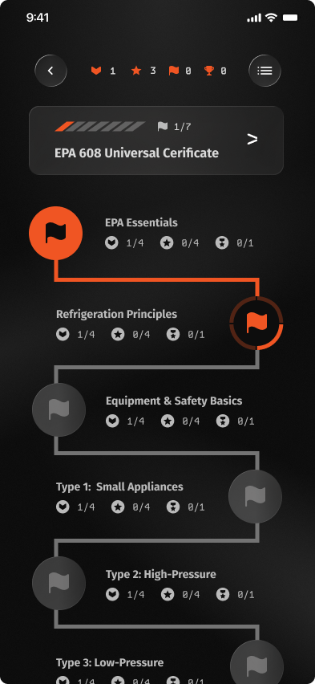
- Progress noted on the top banner bar.
- Military motifs gamify the path — badges, trophies, streaks.
- Each node = a full course, with all sub-tasks, quizzes, and finals listed inside.
- Users must complete every step before moving to the next node.
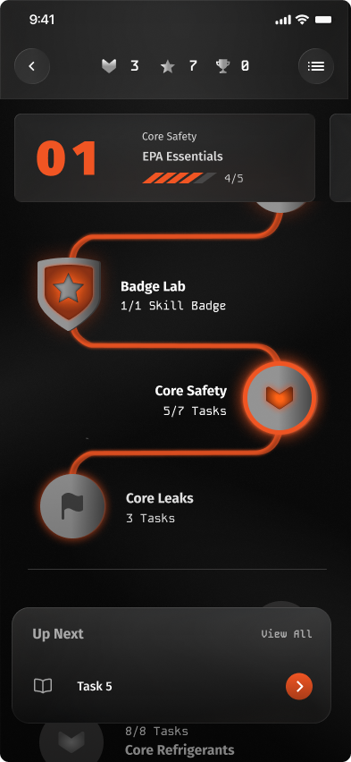
- Updated the course tree UI.
- Simplified the trophy system.
- Each node now = a single lesson with its tasks inside.
- Added a bottom modal for more info.
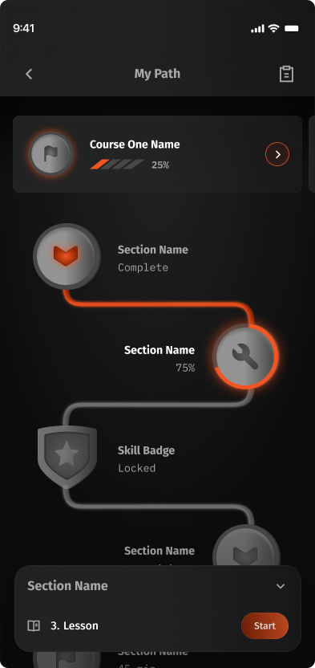
- Banner now includes the user's progress.
- Removed the gamifying features.
- Simplified the node descriptions.
- Simplified the header — now shows the certification name.
- Removed the top banner entirely for a simpler section header.
"You Passed!"
The moment after acing an exam — the score, the certificate, and what to do next. Got progressively more confident about turning a win into momentum.
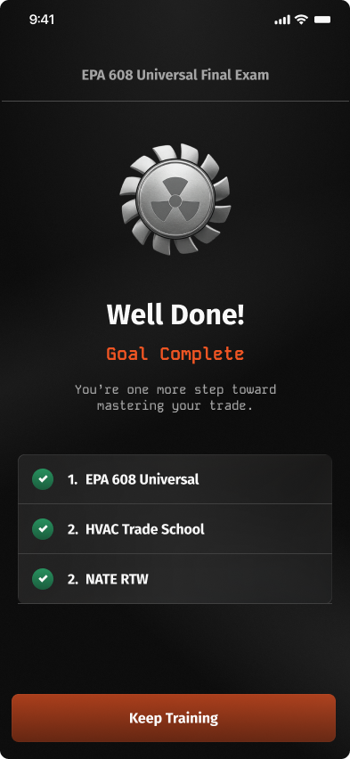
- Large success badge as the hero.
- Checkmarks for each completed step.
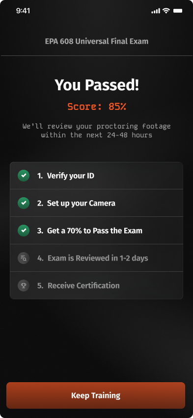
- Removed the large badge.
- Surfaced the exam score.
- Added more steps to the completion status — reviewing results and receiving certification.
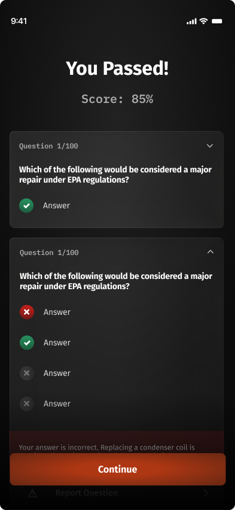
- Removed the quiz / exam title.
- Moved the checkbox steps to a separate page.
- Added a review section covering all questions.
- Renamed "Keep Training" to "Continue" — same destination.
05 · Testing & Insights
Heat Map Testing — 7 participants, 3 flows, and one clear weak point.
An unmoderated Maze study, 7 participants, three core flows: Create Account, Start Course, Edit Path. Starting a course landed cleanly. Editing the path broke down.
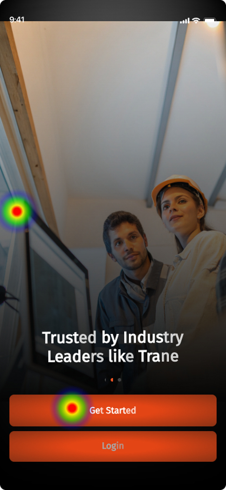
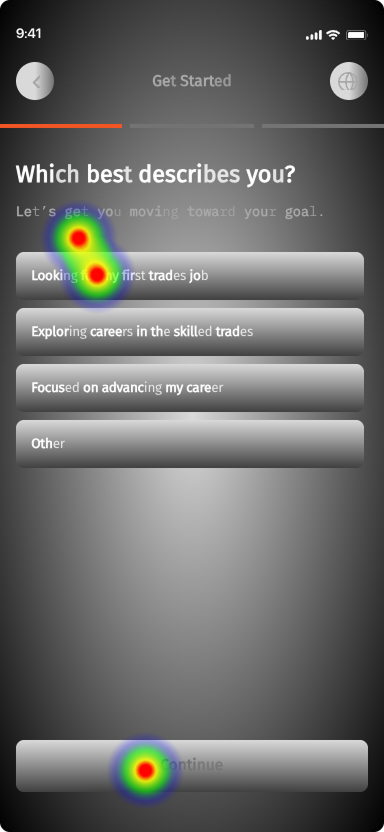
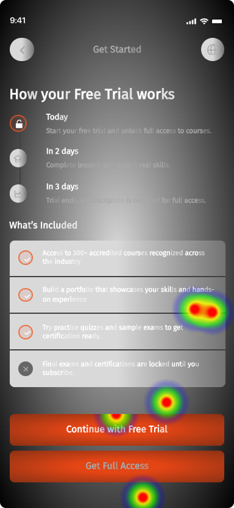
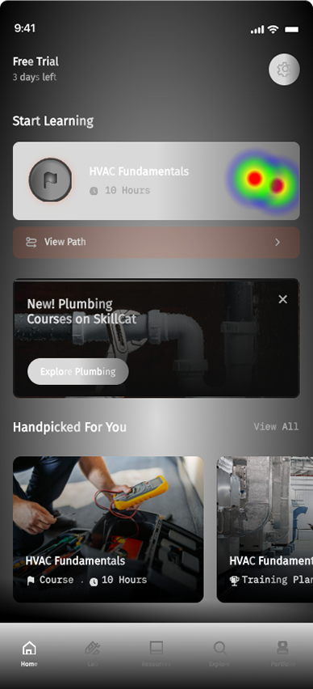
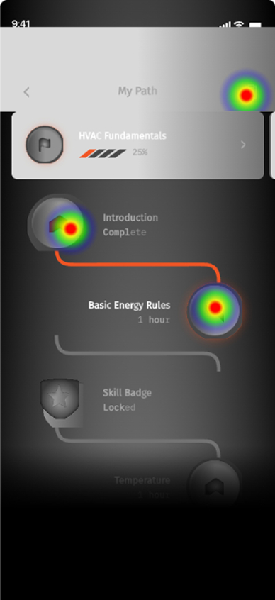
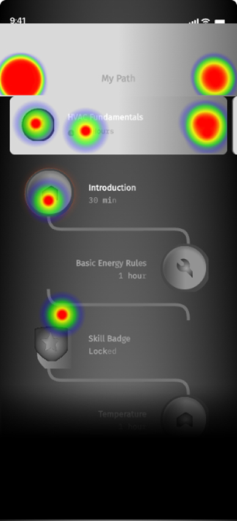
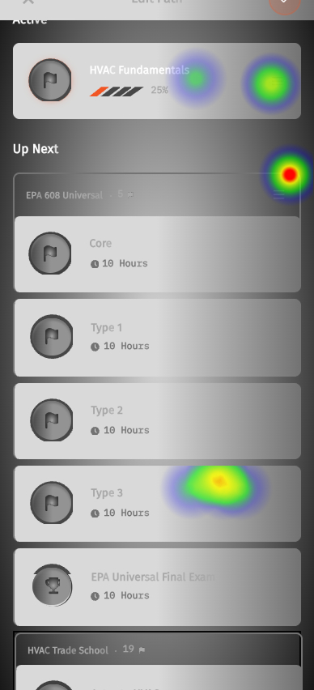
Insights
- The tree-map navigation isn't intuitive yet — confusion about where to start, or how to preview a path.
- Most users clicked the nav bar or home course cards before finding the path module.
- Mobile dropped users off at "Edit Path" — freezing and reloading on path flows. A Maze prototype flaw, but it cost real frustration.
- Some users tapped path cards before discovering swipe-to-remove.
- What's not working: preview navigation, Edit Path functionality, "swipe to delete."
Potential fixes
- Add path education on first arrival — a short walkthrough of the tree map.
- Replace swipe-to-remove with an explicit delete icon on path cards.
- Increase the CTA strength of the first course module so the starting point is unmissable.
06 · The Learner Redesign
Five flows that carry a learner from adding a course to earning an EPA 608 certification.
Enrolling is easy. The hard part is carrying someone from picking a course, through lessons and hands-on tasks, into a proctored final exam, and out the other side holding a real EPA 608 certification — without losing them at any step.
07 · The Admin Dashboard
Valuable insights for admins too
I helped design the employer side as a full dashboard for running training across a team. Assigning courses was reframed from a flat list into a structured plan — pick employees, stack courses in order, set a due date on each. Alongside that: a role-aware Inbox, on-the-job photo review, and a people view that scales past a handful of employees.
A role-aware, unified task system — every approval, assignment, and action an admin owns, surfaced in one place.
Pick employees, stack courses into a sequenced plan with a due date on each row, then review and assign — the three-step plan builder in action.
Review and grade the photos learners submit for hands-on (OTJ) tasks — approve, score, or send it back for another attempt.
Search, filter, and manage the whole team — roles, progress, and bulk actions that scale well past a handful of employees.
Before & After
Full redesigned comparison — drag to see the difference
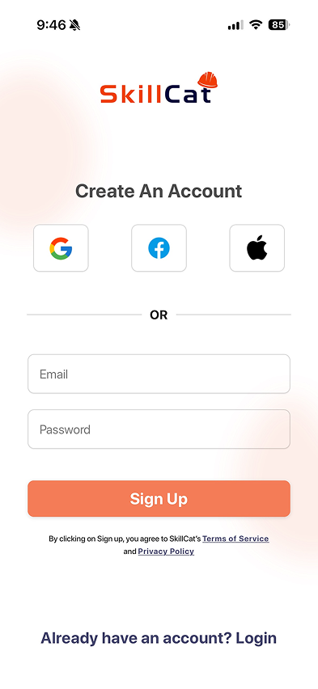
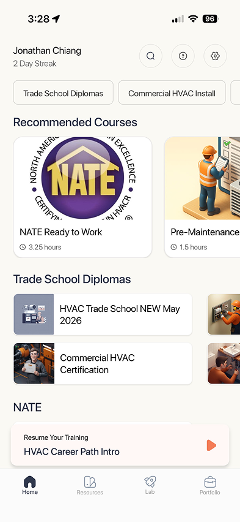
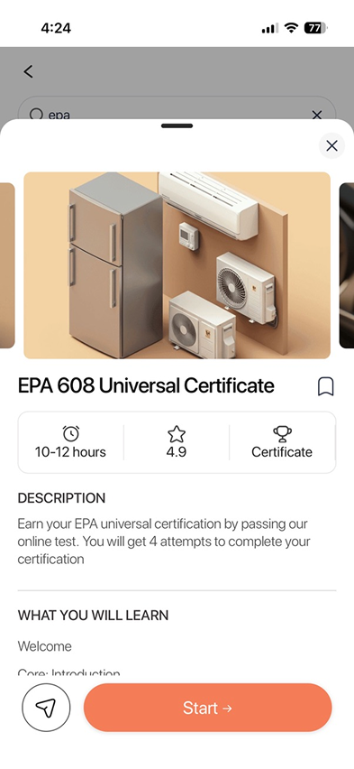
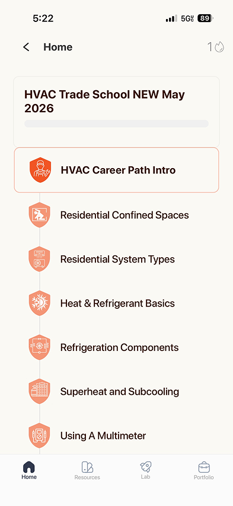
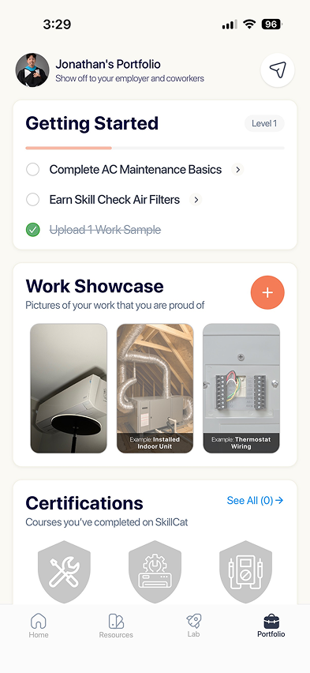
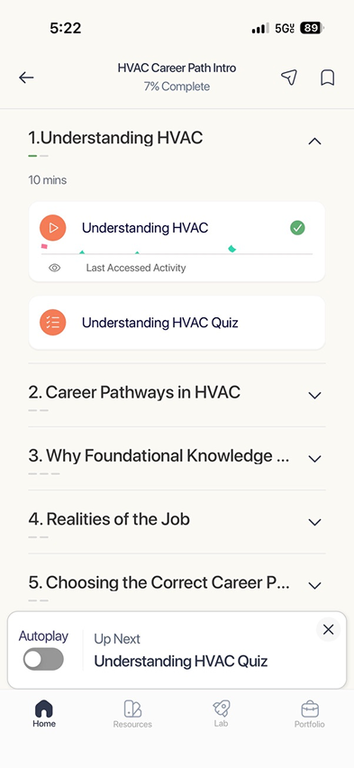
09 · Reflection
Working across consumer onboarding, B2B tooling, and specs meant constantly shifting altitude — from a single animation frame, up to an enterprise workflow, back down to the written rules that make it real. The throughline: understand the job the person is actually trying to do, then shape the product around that.
What this case study shows about how I work
- I reframe problems at the model level before touching layout — the admin dashboard is the clearest example.
- I design complete state systems, which is what makes my work clean to build and quick to ship.
- I care about craft and emotion, down to easing curves, because in a learning product those details drive whether people come back.
- I can carry work from first concept all the way to engineering handoff.